Sankey node layout
API proposal for where the nodes of a sankey (and of other layered graph diagrams) go. The ribbons between them are the stacked-ribbons proposal (design space).
d3-sankey does two kinds of work. Discrete graph decisions (which column a node goes in, and the order inside each column) read the whole link table and produce fields. Continuous placement, given those fields, is already GoFish: a spread of columns, a gapped spread of nodes, and one shared scale that equals d3's to the digit.
What is left over is relaxation (sliding nodes toward their neighbors) and virtual nodes (bend points for long edges). Both are global and iterative, and neither is a strategy on a single column.
All renders below come from prototype stories on today's main with no core changes.
derive data helpers with strategy families (layers(links, { layering: Layering.justify() }), order(links, { ordering: Ordering.barycenter() })) that
feed the existing spread. Relaxation and virtual nodes are
a declared follow-up whose home is a layered(...) operator
over nodes and links (C), built on A's helpers and on
spread.
-
Columns and order are data. They are fields
(
layer,order) a helper computes or a user writes, like Lupton's editable ordering. -
Geometry is composition. Columns are
spread({ by: "layer", dir: "x" }); nodes are a gappedspreadon y; the shared scale is the existing σ fit. -
One phase, one strategy family.
Layering.*for columns,Ordering.*for crossing reduction, likeTile.*for treemaps. - Iteration never enters the layout engine. Relaxation lives in a helper or a layout node that sees nodes and links.
- Ribbons are not decided here. Link ends and ribbon spelling belong to the stacked-ribbons proposal.
-
A template is sugar. A
sankey()template may expand into A; it cannot replace A.
Terms
- Layer (column)
-
The discrete x slot a node sits in. Graph-layout papers say layer or
rank; d3-sankey says
layerordepth. - Order
- A node's rank from the top inside its layer.
- Layer assignment
-
Choosing each node's layer. d3 uses the longest path from any source,
then a rule for where sources and sinks go (
nodeAlign). - Crossing reduction
- Choosing the order inside each layer so few links cross. Finding the best order is NP-hard (no known fast exact method), so tools use heuristics.
- Barycenter
- The weighted mean position of a node's neighbors. Sorting each layer by it, sweeping back and forth, is the classic crossing heuristic.
- Coordinate assignment
- Given layers and orders, choosing exact y positions.
- Relaxation
- d3's coordinate assignment: move each node part way toward the y that would make its links level, then push overlapping nodes apart, and repeat.
- Virtual node
- A placeholder put in each layer a long edge skips (Sugiyama's dummy node), so the edge can bend around boxes and take part in ordering.
- Sugiyama framework
- The standard four-phase layered graph layout (Sugiyama, Tagawa, Toda 1981): 1 cycle removal, 2 layer assignment, 3 crossing reduction, 4 coordinate assignment.
- ky, σ
-
Pixels per data unit. d3-sankey calls it
ky; GoFish's layout engine calls it σ and solves it from the space every node and gap needs.
d3-sankey, phase by phase
Read from d3-sankey/src/sankey.js (research §1). Status
says what GoFish has today.
| Phase | Math | GoFish counterpart | Status |
|---|---|---|---|
| Link lists | join links to nodes | resolve / anchors |
ribbons proposal |
| Node value | max(Σ in, Σ out) | a node is as tall as its taller port stack | ribbons proposal |
| Depth, height | longest path from a source / to a sink (a fold over the whole graph) | none |
A: layers helper
|
| Column rule | nodeAlign: left, right, center, justify |
none |
A: Layering.*
|
| Column x | x = layer · (W − node width) / (n − 1) |
spread({ by: "layer", dir: "x", spacing: fr(1) }),
exact
|
today |
| Padding cap | py = min(padding, H / (max column size − 1)) | keeps px gaps and warns | fine as is |
| Shared scale | ky = min over columns of (H − (n − 1)·py) / Σ value | the σ fit over sibling columns, same number | today |
| Initial stack | stack each column with gap py | spread({ dir: "y", spacing: 10 }) |
today |
| Leftover height | split evenly above, between and below nodes (CSS space-evenly) |
a short column is aligned as a block; fr gaps warn
|
gap, #1165 |
| Order | re-sort each column by y after every move | accepts an order field (field("order").sort()) |
A: Ordering.*
|
| Relaxation | move toward neighbors' level y, damped, 6 rounds | none; needs other columns' positions | C follow-up |
| Collisions | push apart along y with padding, inside the extent | Overlap only moves the other axis |
C follow-up |
| Link ends | stack ends in each node by far node's y | anchors with slots | ribbons proposal |
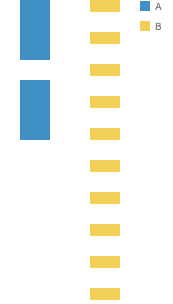
Scale Probe/FixedGaps.
chart(rows)
.flow(
spread({ by: "col", dir: "x", spacing: 40, alignment: "start" }),
spread({ by: "node", dir: "y", spacing: 20 })
)
.mark(rect({ w: 30, h: "v", fill: "col" }))
.render(container, { w: 200, h: 300 });Strategy grid
The same data under each choice. Crossings count pairs of links between
the same two columns whose ends swap order (node centers; long links not
counted). Scripts: d3-reference/crossings.ts.
Small flow (10 nodes, columns of 3, 2 and 5)
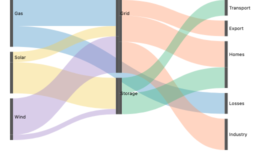
order step. Columns
packed from the top in input order.
5 crossings
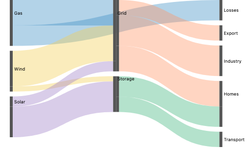
Ordering.barycenter(), tight: four up-and-down
sweeps, then the same spreads. 1 crossing
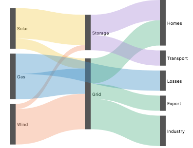
Positioning.relax(), a port of d3's
loop. Matches d3 to 0.00 px here.
3 crossings
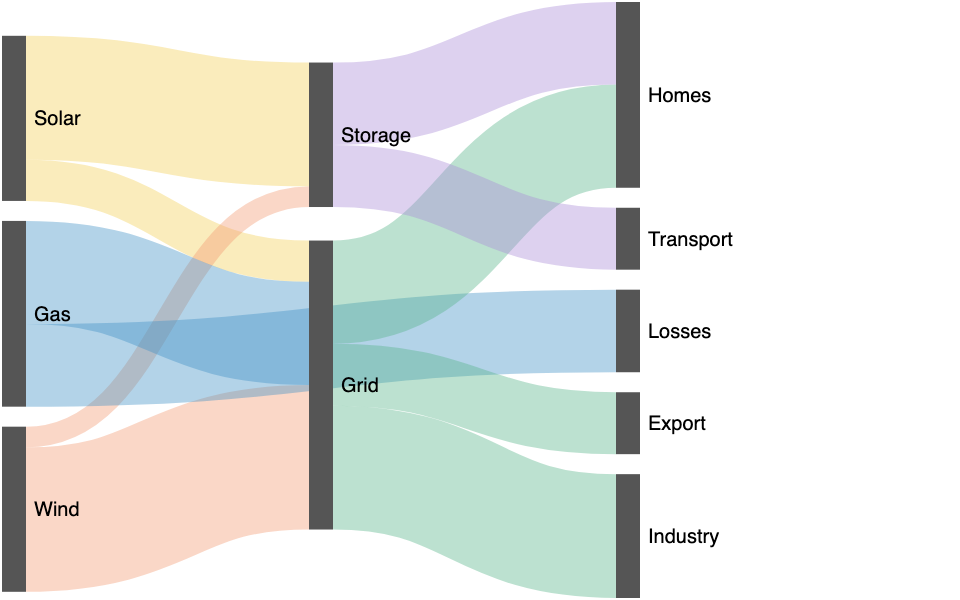
nodeAlign(sankeyJustify), 6
iterations. 3 crossings
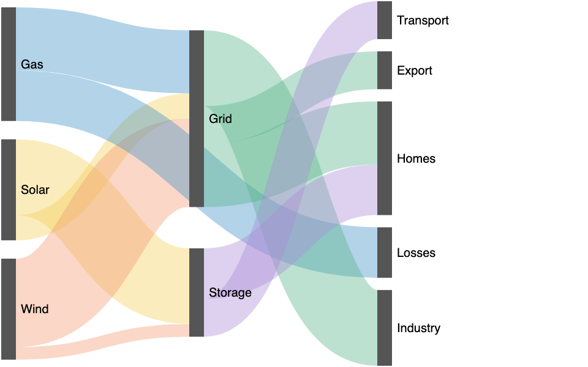
iterations(0): data order, leftover height spread evenly. Same order as the
first card. 5 crossings
UK energy (48 nodes, 68 links)
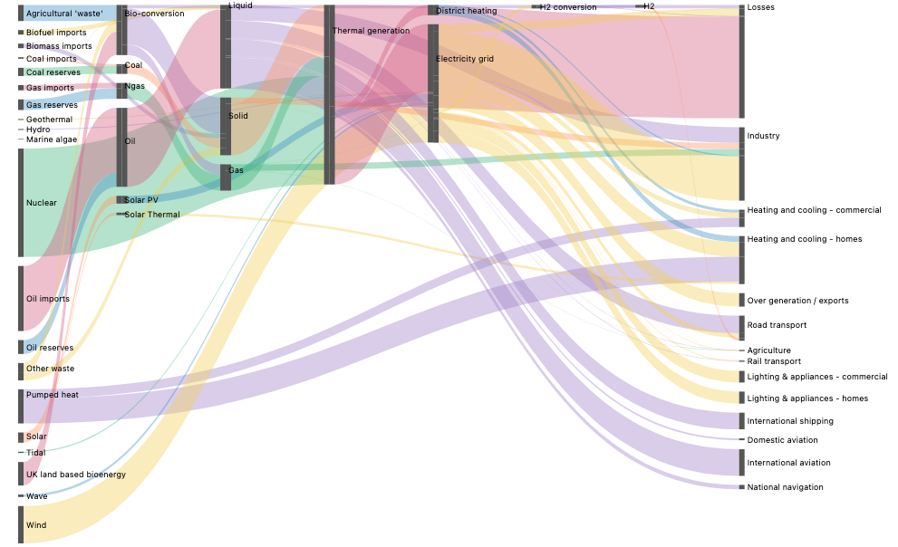
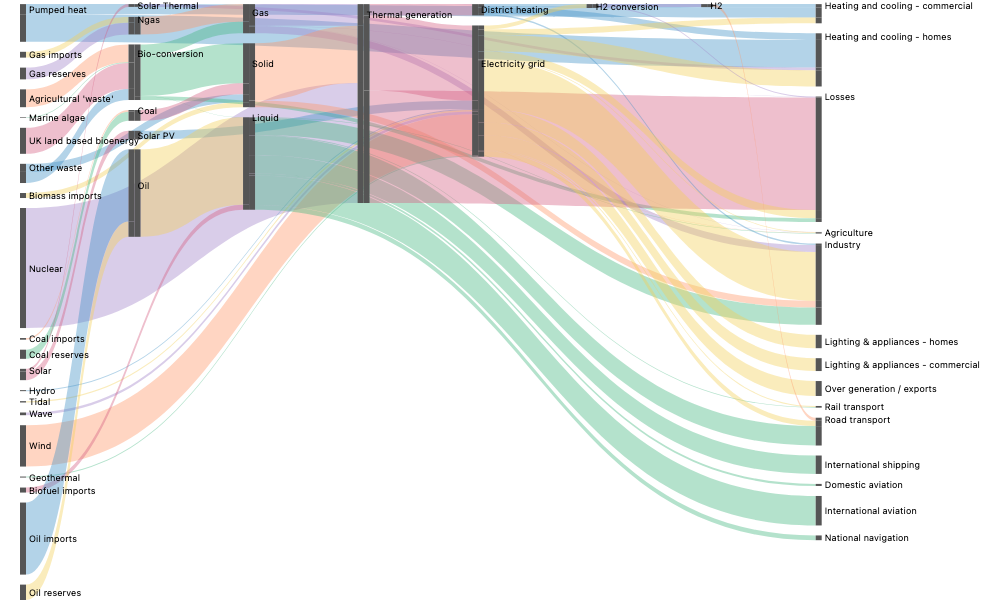
Ordering.barycenter(), tight. Fewest crossings
of all, but columns are packed and bands slant.
17 crossings
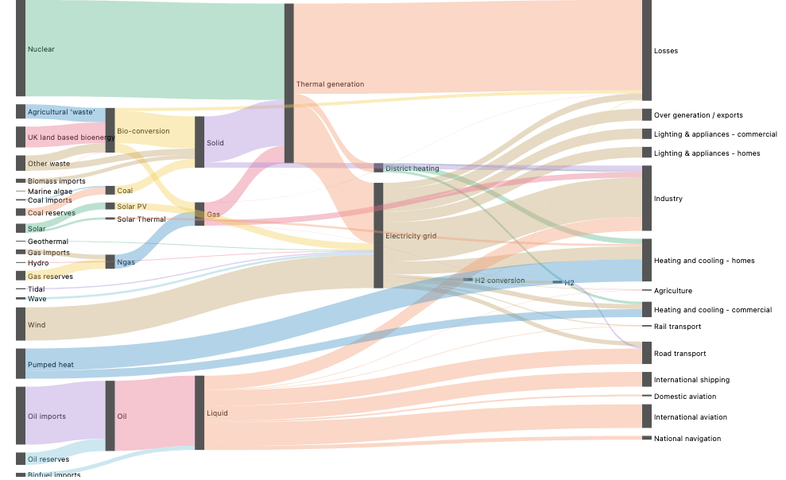
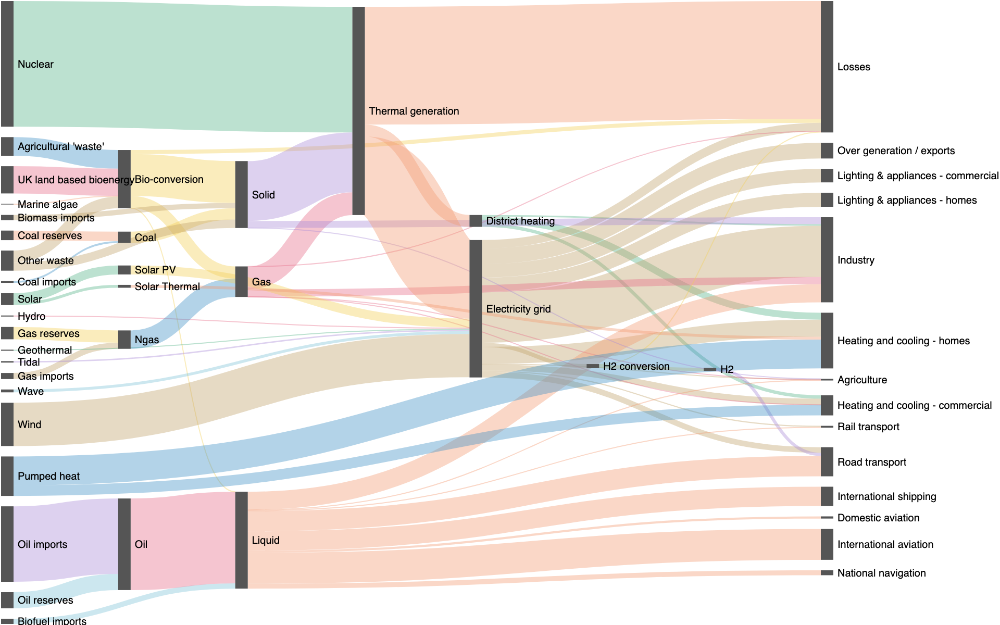
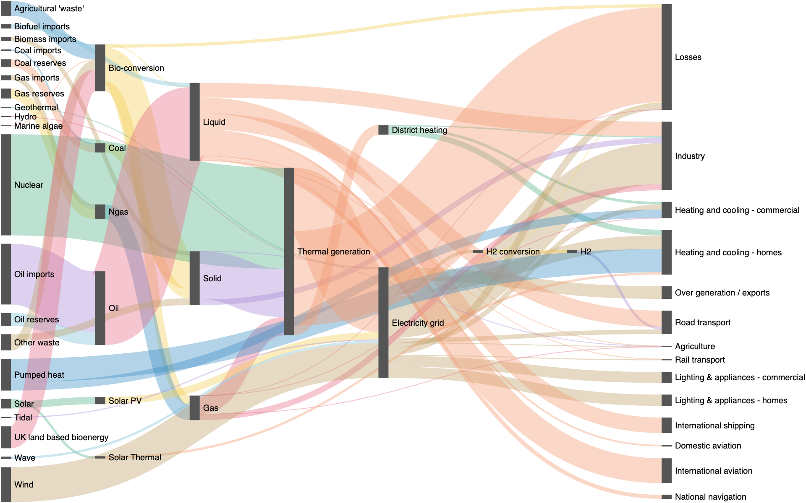
iterations(0). 72 crossings
Reading the grid: d3's relaxation does not minimize crossings; barycenter ordering beats it (17 vs 27 on energy, 1 vs 3 on the small flow). Relaxation straightens bands and uses the leftover height. These are different goals, which is one reason to keep ordering and coordinate assignment as separate phases.
Approaches
A. Graph phases as data helpers, placement by existing operators
Two derive helpers read the links table and add fields to
the nodes: layers adds layer,
order adds order. Each takes a strategy, in
the style of ELK's per-phase options and d3-dag's slots. Everything
after that is today's spread. Not calling
order keeps the data order, which is how a user supplies
their own ordering (Lupton's d3-sankey-diagram does the same: given an
ordering, no algorithm runs).
layer([
chart(nodes)
.flow(
derive(layers(links, { key: "name", layering: Layering.justify() })), // @hl
derive(
order(links, {
key: "name",
by: "layer",
ordering: Ordering.barycenter(),
})
), // @hl
spread({ by: "layer", dir: "x", spacing: fr(1) }),
spread({ by: field("order").sort(), dir: "y", spacing: 10 })
)
.mark(rect({ w: 12, h: "value" }).name("nodes")),
// ribbons: see the stacked-ribbons proposal
]);layer(
[
chart(nodes)
.flow(
derive(layers(links, key="name", layering=Layering.justify())), # @hl
derive(
order(links, key="name", by="layer", ordering=Ordering.barycenter())
), # @hl
spread(by="layer", dir="x", spacing=fr(1)),
spread(by=field("order").sort(), dir="y", spacing=10),
)
.mark(rect(w=12, h="value").name("nodes")),
]
)const col = layers(names, links, "justify"); // @hl
const order = barycenterOrder(names, links, col); // @hl
const ends = linkEnds(links, col, order);
layer([
chart(ends)
.flow(
spread({
by: field("layer").sort(),
dir: "x",
spacing: fr(1),
alignment: "end",
axes: false,
}),
spread({
by: field("node").sort(sortedNames(names, col, order)),
dir: "y",
spacing: 10,
axes: false,
}), // @hl
spread({
by: field("side").sort(["in", "out"]),
dir: "x",
spacing: 0,
alignment: "start",
axes: false,
}),
spread({ by: field("far").sort(), dir: "y", spacing: 0, axes: false })
)
.mark(rect({ w: 6, h: "value", fill: "#555" }).name("ports")),
chart(selectAll("ports"))
.flow(group({ by: "link" }))
.mark(ribbon({ opacity: 0.4, fill: "src", curve: Curve.bezier() })),
]);The hand-written helpers today (about 120 lines)
layers (longest path plus the d3 column rule),
barycenterOrder (sweeps),
linkEnds (the ends table) and
sortedNames are plain JS in
stories/_proposals/sankey-layout/_proto.ts. The
ends table and its two port tiers are the stacked-ribbons
proposal's form; with its anchors, the flow drops to the two
node tiers shown on the left. The label layer and the
alignment: "end" workaround are omitted here (see
Gaps).
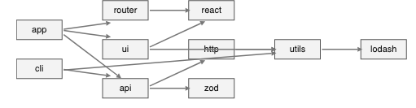
chart(nodes)
.flow(
derive(layers(links, { key: "name", layering: Layering.longestPath() })), // @hl
derive(
order(links, {
key: "name",
by: "layer",
ordering: Ordering.barycenter(),
})
), // @hl
spread({ by: "layer", dir: "x", spacing: fr(1), alignment: "middle" }),
spread({ by: field("order").sort(), dir: "y", spacing: 24 })
)
.mark(
rect({ w: 56, h: 24 }).label("name", { position: "center" }).name("box")
)
.layer(
chart(links)
.flow(resolve(["source", "target"], { from: selectAll("box") }))
.mark((edges) => layer(edges.map((e) => arrow({}, [e.source, e.target]))))
);chart(nodes).flow(
derive(layers(links, key="name", layering=Layering.longest_path())), # @hl
derive(order(links, key="name", by="layer", ordering=Ordering.barycenter())), # @hl
spread(by="layer", dir="x", spacing=fr(1), alignment="middle"),
spread(by=field("order").sort(), dir="y", spacing=24),
).mark(rect(w=56, h=24).label("name", position="center").name("box"))const col = layers(depNames, depLinks, "left"); // @hl
const order = barycenterOrder(depNames, depLinks, col); // @hl
const nodes = depNames.map((name) => ({ name, layer: col.get(name) })); // @hl
chart(nodes)
.flow(
spread({
by: field("layer").sort(),
dir: "x",
spacing: fr(1),
alignment: "middle",
}),
spread({
by: field("name").sort(sortedNames(depNames, col, order)),
dir: "y",
spacing: 24,
}) // @hl
)
.mark(
rect({ w: 56, h: 24 }).label("name", { position: "center" }).name("box")
)
.layer(
chart(depLinks)
.flow(resolve(["source", "target"], { from: selectAll("box") }))
.mark((edges) =>
layer(
edges.map((e) => arrow({ bow: 0, stretch: 0 }, [e.source, e.target]))
)
)
);
The two edges that skip layers (ui → utils,
cli → utils) run straight through http and
ui. Fixing that needs virtual nodes, which are not data
rows. That is the one thing A cannot do (see C).
Composes with: any flow tier after it (the fields are ordinary
fields), Coord.polar() (layers as rings, a dependency
wheel), and the stacked-ribbons anchors for link ends. It desugars to
derive plus spread.
Overlap check: none with spread or the σ fit,
since A does no placement. Ordering.* is close to a
sort, but it reads the links table, so it is not a sort
over one column of the rows.
Trade-offs: easy to explain and to override (write your own
layer or order field). New terms: two
helpers and two families. It cannot produce d3's relaxed look or bend
long edges. It needs a second table (links) passed to a
helper over the nodes; today's derive helpers see only
the current rows.
B. Relaxed y as a precomputed field, placed by scatter
A helper runs d3's relaxation and outputs each node's y interval in
value units. The node tier becomes
scatter({ yMin, yMax }) instead of a spread. It draws
d3's look today, but the costs are measurable.
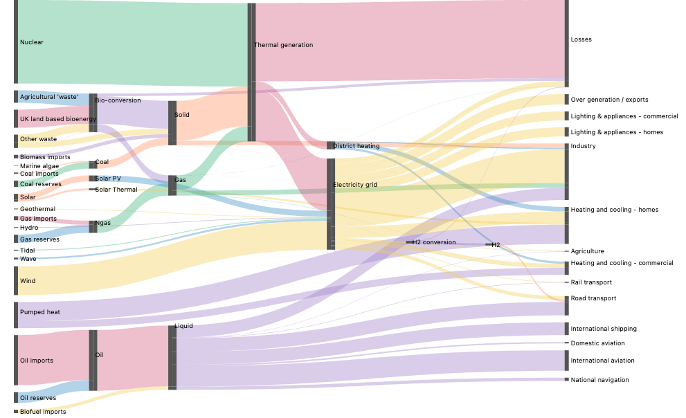
chart(nodes)
.flow(
derive(layers(links, { key: "name", layering: Layering.justify() })),
derive(
relax(links, {
key: "name",
by: "layer",
size: "value",
padding: 10,
height: 600,
})
), // @hl
spread({ by: "layer", dir: "x", spacing: fr(1) }),
scatter({ by: "name", yMin: "yMin", yMax: "yMax" }) // @hl
)
.mark(rect({ w: 12, h: "value" }));chart(nodes).flow(
derive(layers(links, key="name", layering=Layering.justify())),
derive(
relax(links, key="name", by="layer", size="value", padding=10, height=600)
), # @hl
spread(by="layer", dir="x", spacing=fr(1)),
scatter(by="name", y_min="yMin", y_max="yMax"), # @hl
).mark(rect(w=12, h="value"))const { box, ky } = relax(names, links, col, { height: 600, padding: 10 }); // @hl
const ends = linkEnds(links, col, yTop).map((e) => ({
...e,
yMin: (600 - box.get(e.node).y1) / ky, // @hl
yMax: (600 - box.get(e.node).y0) / ky, // @hl
}));
chart(ends).flow(
spread({
by: field("layer").sort(),
dir: "x",
spacing: fr(1),
alignment: "start",
axes: false,
}),
scatter({ by: "node", yMin: "yMin", yMax: "yMax", axes: false }), // @hl
spread({
by: field("side").sort(["in", "out"]),
dir: "x",
spacing: 0,
alignment: "start",
axes: false,
}),
spread({ by: field("far").sort(), dir: "y", spacing: 0, axes: false })
);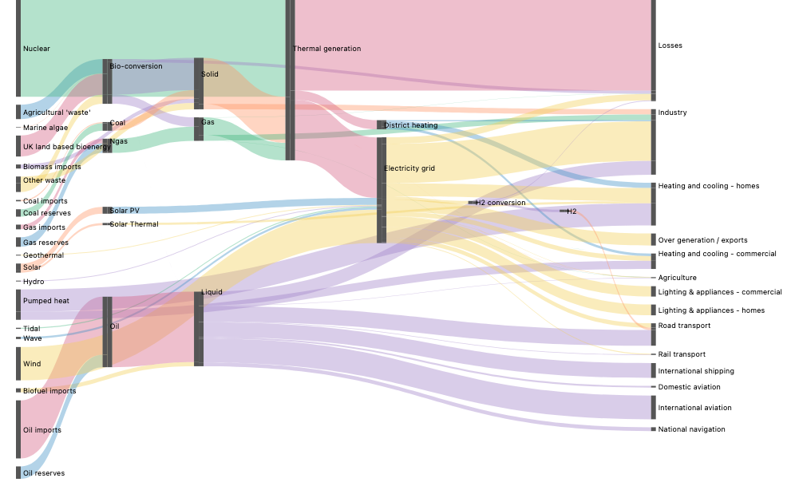
derive, collisions
are a column strategy". Total vertical travel of the bands (Σ
value·|Δy|) rises 13%: 574,847 vs 509,045 interleaved (d3:
510,730). Crossings happen to drop (17 vs 26), so it is a
different layout, not uniformly worse.
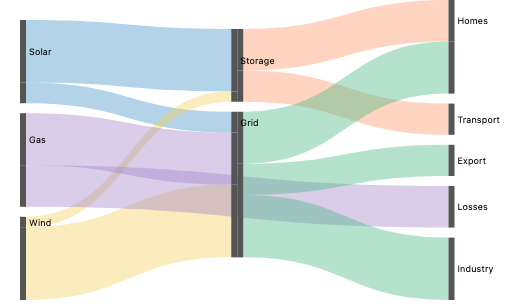
img/d3-small.png).
Can relaxation be a strategy on the column's spread? No, for three reasons:
- It reads other columns. A node's target is the y that would level its links, which depends on the positions of nodes in other columns and the order of links inside them. A strategy on one column sees only its own children.
- It is a fixed point. Column i depends on columns i − 1 and i + 1, which depend on column i.
-
It cannot be split. d3 removes overlaps inside every sweep,
because the next sweep reads the resolved positions. Moving
collision removal to a single local step changes the layout (figures
above). Even that local step has no home: the
Overlapstrategies move only the free axis (a beeswarm moves x and keeps y).
Overlap check: large partial overlap. The helper recomputes ky, padding and the chart height in pixels, which the spreads and the σ fit already own, and must be told the canvas height.
Trade-offs: works today with a helper; matches d3. But it duplicates the scale, breaks if the visualization is resized or nested, and needs a y flip (helper pixels go down, the data axis goes up).
C. One layered operator over nodes and links, phases as
strategies
One operator owns nodes and edges and runs the three Sugiyama phases
as strategy options, like d3-dag's
sugiyama().layering().decross().coord() or ELK Layered.
Because it sees edges, it can add virtual nodes and run relaxation.
The prototype computes every position in JS and emits placed marks, so
it is a stand-in.
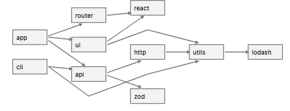
layered(
{
spacing: 24,
layering: Layering.longestPath(),
ordering: Ordering.barycenter(),
positioning: Positioning.stack(),
virtualNodes: true, // @hl
},
{
nodes,
links,
node: rect({ w: 56, h: 24 }).label("name", { position: "center" }),
link: arrow(),
}
);layered(
spacing=24,
layering=Layering.longest_path(),
ordering=Ordering.barycenter(),
positioning=Positioning.stack(),
virtual_nodes=True, # @hl
nodes=nodes,
links=links,
node=rect(w=56, h=24).label("name", position="center"),
link=arrow(),
)
No spelling. The prototype's layeredGeometry (in
_proto.ts) inserts the virtual nodes, orders and
stacks them with the real ones, and the story draws each long
edge as a line through the bend points plus an
arrow for the last segment, all inside
.relate().
layered(
{
size: "value",
spacing: 10,
layering: Layering.justify(),
ordering: Ordering.barycenter(),
positioning: Positioning.relax({ iterations: 6 }), // @hl
},
{
nodes,
links,
node: rect({ w: 12, fill: "#555" }),
link: ribbon({ opacity: 0.4 }),
}
);layered(
size="value",
spacing=10,
layering=Layering.justify(),
ordering=Ordering.barycenter(),
positioning=Positioning.relax(iterations=6), # @hl
nodes=nodes,
links=links,
node=rect(w=12, fill="#555"),
link=ribbon(opacity=0.4),
)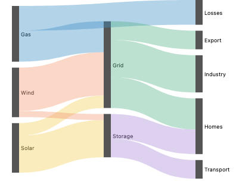
Positioning.stack() on the small flow:
barycenter order, centered columns. This is exactly A's two spreads,
which is the overlap the check below is about.
Composes with: Coord.* via frame;
node and link marks are ordinary marks. It would be a layout node like
treemap or pack: an algorithm behind an
operator.
Overlap check: large partial overlap unless it is built on A.
Positioning.stack() is A's column spread plus node
spread, and the shared scale is the σ fit. To stay clean, C must
desugar into A's helpers for layering and ordering and into
spread for stacked placement, adding only what A cannot
do: virtual nodes and Positioning.relax().
Trade-offs: serves DAG diagrams and flowcharts, not only sankeys. Three new families and one operator. It hides the flow tiers: a user cannot insert a tier between columns and nodes.
D. A GoTree-style template
A sankey(spec, data) function that expands into A's spec,
like gofish-gotree's
tree(spec, data) expands into spread,
layer and .relate() calls.

sankey({ layering: Layering.justify(), spacing: 10 }, { nodes, links }).render(
container,
{
w: 960,
h: 600,
}
);sankey(nodes=nodes, links=links, layering=Layering.justify(), spacing=10)
Approach A's spec, line for line. The render is
byte-identical to A's (cmp on the two PNGs).
Is it "elaboration like GoTree"? GoTree elaborates local relations (parent to child, sibling to sibling) into combinators, because a tree's structure is the data's nesting. A sankey's missing pieces are whole-graph folds: longest paths and crossing sweeps over every link. Elaboration can only express those by calling A's helpers before it emits operators. So a template is sugar over A and does not remove the need for A.
Overlap check: exact composition (defined by its rewrite). Trade-offs: short user code; hides the tiers; another name for one chart type (the "geom_sankey" pattern GoFish avoids).
Prior work
sankey().nodeAlign(sankeyJustify).nodePadding(10).nodeSort(null).iterations(6);sugiyama()
.layering(layeringLongestPath())
.decross(decrossTwoLayer())
.coord(coordSimplex());INTERACTIVE and NONE ("keep the user's
order") are strategies, not a separate API.
({
"elk.layered.layering.strategy": "LONGEST_PATH",
"elk.layered.crossingMinimization.strategy": "LAYER_SWEEP",
"elk.layered.nodePlacement.strategy": "BRANDES_KOEPF",
});ranker); dot takes constraints
in the graph (rank=same, minlen).
g.setGraph({ rankdir: "LR", ranker: "longest-path", nodesep: 50, ranksep: 50 });layout.ordering([[["coal"], ["gas"]], [["grid"]]]);pcg
.replicate(pcg.replicate(glyph, "Name").stackLayout("y", 6), "Kind")
.stackLayout("x", 500);ggplot(df, aes(x = axis, stratum = stratum, alluvium = id, y = n)) +
geom_flow() + geom_stratum()node.x/node.y
and an arrangement drag mode; ECharts takes
layoutIterations and per-node depth.
({ type: "sankey", nodeAlign: "justify", layoutIterations: 32, nodeGap: 8 });Gaps and bugs
Each has a repro story under
stories/_proposals/sankey-layout/.
| Item | Kind | Repro / evidence |
|---|---|---|
A sibling label layer flips what alignment means on
y: the short column moves from top (y 0) to bottom (y 105).
|
bug to file |
Repro/AlignStartNoLabels vs
AlignStartWithLabels; A and D use
alignment: "end" as a declared workaround.
|
The same repro without axes: false throws "axis 1 has
a continuous type but no size claim".
|
bug to file |
Repro/AlignStartWithLabels with default render
options.
|
A line from a box ref hid the label drawn on that
box.
|
bug, not reduced |
Approach C/Dependencies before its 1 px start-point
workaround.
|
No spacing with a pixel minimum that spreads leftover height
between nodes (d3's space-evenly).
spacing: fr(1) warns and rescales nodes.
|
design, #1165 |
Scale Probe/FlexibleGaps: nodes 27.5 px instead of
12.
|
| Labeling a node when the flow's leaf is a port. The stories label the first port. | design | Approach A/Small label layer. |
No 1D overlap removal along the placed axis;
Overlap.* moves only the free axis.
|
design, C follow-up | research §5.3 |
Two y conventions: a literal rect({ y }) counts down
from the top, scatter's y points up.
|
design question | C used d3's pixels as is; B had to flip them. |
| Long right-column labels run past the canvas. | design (chrome room) | Approach A/Energy at 960 px. |
alignment: "start" puts the
short column at the top.
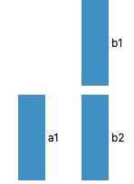
layer([
bars(), // spread({ by: "col", dir: "x", alignment: "start" }) over spread({ by: "node", dir: "y" })
chart(selectAll("bars")) // @hl
.flow(group({ by: "node" }))
.mark((refs) =>
spread({ dir: "x", spacing: 3 }, [
refs[0],
text({ text: String(project(refs[0], "node")) }),
])
),
]).render(container, { w: 200, h: 200, axes: false, legend: false });Recommendation
A now. It desugars into the existing core: two
derive helpers and the spread composition GoFish already
has, with the shared scale coming free. One concept per helper. The
strategy families follow the Tile and
Curve precedent and cross to Python as IR. The JS and
Python shapes are the same. A user can always replace a helper with
their own field, which is the Lupton model.
Runner-up: C, as the follow-up. Relaxation and virtual nodes
need an operator that sees nodes and links. It should desugar into A's
helpers and spread and add only
Positioning.relax() and virtual nodes, so it does not
overlap A.
What would flip the pick to C now: if d3's relaxed look should be the default sankey, or if layered DAG diagrams with bent edges are wanted soon. Note that barycenter ordering already has fewer crossings than d3, so the relaxed look is mainly straighter bands and fuller columns.
Decisions for Josh
- A now and C later, or C now?
-
Where do the graph phases live:
derivehelpers over nodes that take the links table as an argument, or a flow operator over the links? -
Family names:
LayeringandOrdering, and for C's coordinate phasePositioning? (Placeis the label family,Coordis coordinate transforms, andalignmeans the cross axis in GoFish.) -
Default column rule:
justify(sinks in the last column, like d3) orlongestPath(left)? - Is fill-the-height spacing part of this effort, or does it stay with #1165?
- Is a
sankey()template wanted at all?
Rationale
-
Desugar into the core (principles, "Why keep the core
small"): A adds data helpers; placement stays
spreadand the σ fit. - No geom_sankey (composition-not-enumeration): D alone would be one more chart type.
- No iteration in the engine (constraints-as-core: "There is no fixpoint iteration anywhere"): relaxation belongs in a helper or a layout node, which is C.
- Overlap only at the edges (api-design): B duplicates ky and padding by another route; C would too unless built on A.
- Data flows as lists (api-design): the helpers take node and link rows, never a graph object.
-
Accepting an order is the zero-engine path
(
notes/design/modular-layout-algorithms.md, option D): A keeps it, since skippingorderkeeps the data order. -
Correction to earlier notes: d3 with a fixed
nodeSortis closed-form only withiterations(0); it still relaxes positions otherwise.
Related issues
- #47 Stacked ribbons: the link-end half of sankeys (the companion proposal).
- #631 Modular layout algorithms: can the engine host sankey and graph layout as pluggable passes.
-
#701 The design note for #631
(
modular-layout-algorithms.md). - #355 Decompose treemap, tidy tree and Sugiyama into grouping primitives.
- #485 Solvers as tactics that emit discrete commitments (layers, orders) for the core.
- #610 A layout-program IR for inspectable algorithmic layouts.
- #1165 Fill the frame without hand-tuned pixel spacing; where fill-the-height gaps would go.
-
#1013 One namespace per strategy family
(
Tile.squarify()), the pattern forLayeringandOrdering. -
#1003
scatteroverlap strategies; whyOverlapmoves only the free axis. - #1163 Extension packages (gotree) crossing to Python from one definition; relevant if D ships.
- #46 Composite visualization examples, including a FrankenSankey (a hard case).
Prototype stand-ins and how to reproduce
Stories:
packages/gofish-graphics/stories/_proposals/sankey-layout/
(ApproachA to D, ScaleProbe, Repro). Throwaway helpers:
_proto.ts. d3 references:
d3-reference/render-d3.mjs (d3-sankey 0.12.3). Notes with
every story's code: NOTES-prototypes.md. Research:
research.md.